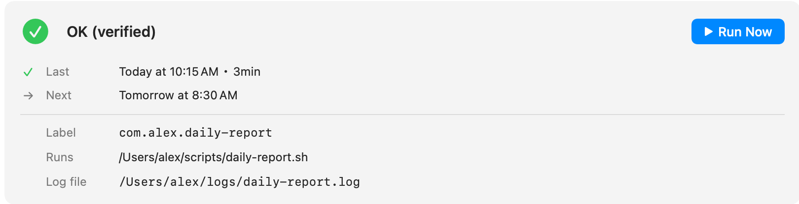
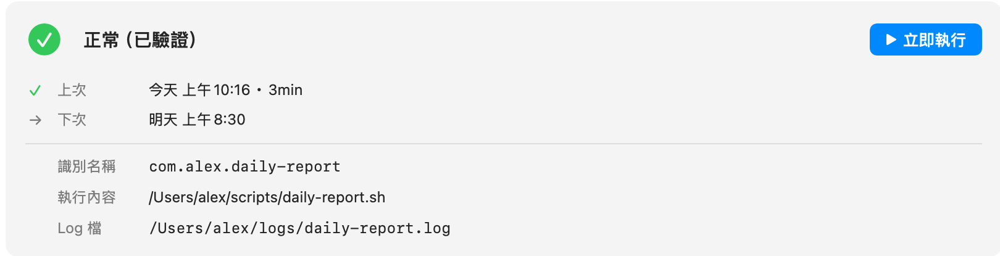
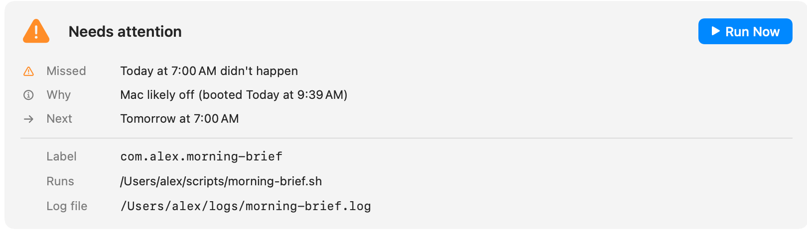
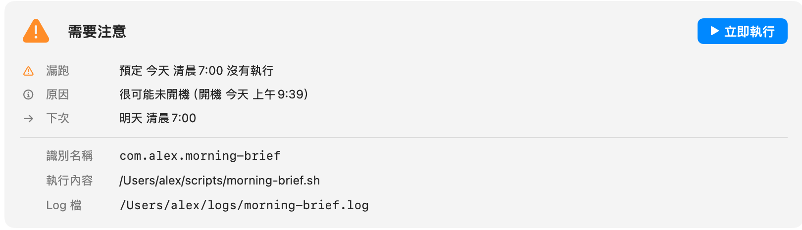
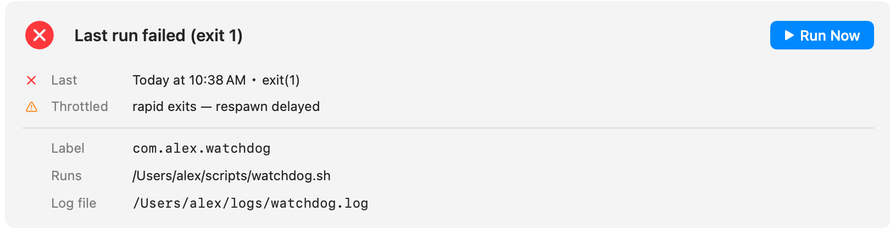
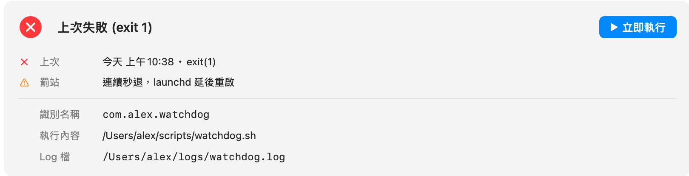

What's new
版本更新
Every release, and what it means for your schedules.
每一版做了什麼、對你的排程代表什麼。
The status light grows up: green is no longer "no problem detected" — it's earned by evidence. Clocksmith now reconciles each job's schedule against run history rebuilt from the system log, and every verdict shows the facts it rests on.
狀態燈長大了：綠燈不再是「沒發現問題」，而是「有證據才給」。Clocksmith 會拿每個排程的時間表跟系統日誌重建的執行紀錄對帳，每個判定都列出它的依據。






- Missed-run detection — a daily job whose time passed with no matching record goes orange, with honest wording about what the scan could actually see.
- 漏跑偵測——預定時間過了卻找不到對應紀錄的排程會亮橘燈，措辭誠實標明掃描實際看得到的範圍。
- Throttle detection — jobs that keep exiting quickly get an explicit "launchd is delaying respawn" flag.
- 罰站偵測——連續秒退的排程會明確標出「launchd 正在延後重啟」。
- App-managed agents — agents apps register invisibly (SMAppService) now appear as read-only rows.
- App 自帶排程——App 藏在自己包裡註冊的排程（SMAppService）現在會以唯讀列出。
- Output size — opt-in per job: the last run's log size as a plain number, no judgment.
- 輸出大小——每個排程可各自開啟：顯示上次輸出大小的純數字，不做判斷。
- Instant warm launch — history persists across launches; reopening shows verdicts in about a second and rescans only the gap.
- 秒開暖啟動——執行歷史跨啟動保留；重開約一秒顯示判定，只補掃離開期間的缺口。
- Text zoom — ⌘+ / ⌘− / ⌘0 scales the whole app.
- 字體縮放——⌘+／⌘−／⌘0 縮放整個 app 的文字。
- Full log console: ⌘F search with match stepping, errors-only filter that keeps original line numbers, follow-tail, adjustable text size.
- 完整 log 主控台：⌘F 搜尋逐筆跳轉、「只看錯誤」保留原始行號、自動跟到最新、可調字級。
- Failure banner with plain-language summary and red-highlighted error lines.
- 失敗橫幅附白話摘要，錯誤行標紅。
- One click hands a failing job's log to ChatGPT, Claude, or Gemini — question prefilled, using your own account. The app itself sends nothing anywhere.
- 一鍵把失敗排程的 log 交給 ChatGPT／Claude／Gemini，問題已填好、用你自己的帳號。App 本身不傳送任何資料。
- Free 7-day full trial, then $4.99 one-time. Offline or server errors never lock out a licensed user.
- 免費 7 天全功能試用，之後 US$4.99 一次買斷。斷網或伺服器錯誤絕不鎖已授權使用者。
- Every launchd agent in one window: live status, last-run history from the system log, run now, enable/disable, reschedule — with automatic config backup before every change.
- 所有 launchd 排程一個視窗看完：即時狀態、系統日誌重建的執行紀錄、立即執行、啟用停用、改時間——每次修改前自動備份設定檔。